XuperIDE 使用文档¶
简介¶
XuperIDE 由超级链生态伙伴 黑曜石实验室（Obsidian Labs） 贡献。基于XuperChain开发的智能合约集成化开发环境的IDE开源项目，支持开发者一键创建节点、编写、编译、部署、调用合约等。
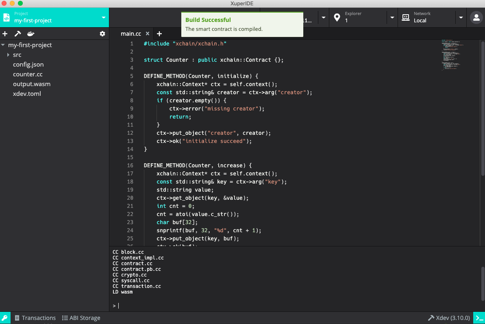安装¶
安装¶
macOS: 双击打开 XuperIDE-x.x.x.dmg 并将 XuperIDE 拖动到应用文件夹内（初次运行时若出现未通过苹果验证的提示，可右键点击应用图标并打开，跳过验证）。
Linux: 双击打开 XuperIDE-x.x.x.AppImage, 选择 Properties* => *Permissions* => *Execute, 将 Allow executing file as progrom 选项打勾。关闭属性设置窗口并双击打开应用（不同的 Linux 发行版可能会有不同的安装方式）。
Windows: 双击 XuperIDE-x.x.x.exe，安装并打开应用。
功能预览¶
准备工作¶
在正确安装 XuperIDE 并初次启动时，你将看到一个欢迎页面，这里有 XuperIDE 正常运行所需要的依赖，包括了 Docker，XuperChain node 及 Xdev
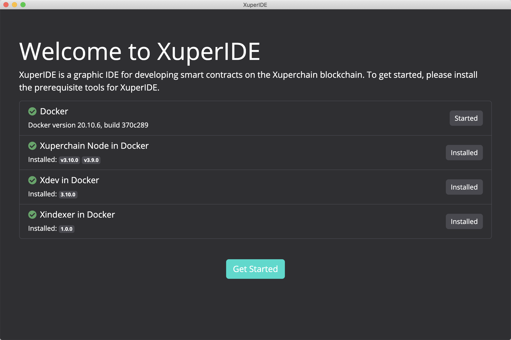- XuperIDE 使用 Docker 来启动 Xuper 节点和进行项目编译。如果你之前没有安装过 Docker，可以点击 Install Docker 按钮访问 Docker 官方网站并进行下载安装；
对于 Windows 用户，我们推荐使用 Docker Desktop 。Docker Toolbox 也可使用，但在一些情况可能会出现问题；
XuperChain node 是超级链节点的 Docker 镜像，XuperIDE 使用这个镜像来运行 XuperChain 节点；
Xdev 是超级链 C++ 合约的开发及编译工具。
当所有依赖都正确安装并运行后，灰色的 Skip 按钮将会变成绿色的 Get Started 按钮。点击这个按钮进入 XuperIDE 的主界面。
创建密钥对¶
进入主界面后，我们需要首先创建一些密钥对。在 XuperIDE 的任意界面，点击应用左下⻆的钥匙图标，打开密钥管理器。
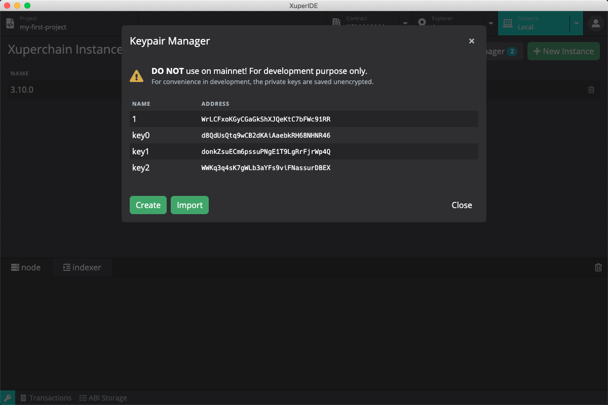你可以在密钥管理器中创建、导入并管理密钥对。在创建和编辑密钥对的时候，你可以为该密钥对设置别名，方便在后续的使用中进行识别。密钥管理器除了对密钥对进行储存管理外，还将为创世区块提供创世地址。创建新的 Xuper 节点实例时，XuperIDE 会使用密钥管理器里的地址作为创世地址。
创建的新密钥对将使用中文助记词来生成私钥。不过，导入私钥的时候也可以导入英文助记词或者 JSON 格式超级链私钥。
在继续之前，请先在密钥管理器中创建一些密钥对，作为接下来创建节点实例的创世地址。
启动节点¶
点击顶部的 Network 标签，主页面将切换为网络管理器。在网络管理器中，我们可以进行 Xuper 节点版本和节点实例的管理，包括下载、删除 Xuper 节点版本，根据不同版本创建、删除和运行节点实例。
点击主页面中右上角的 New Instance 按钮打开创建新实例的弹窗，填写实例名称和选择合适的版本，点击 Create 按钮完成节点实例的创建。
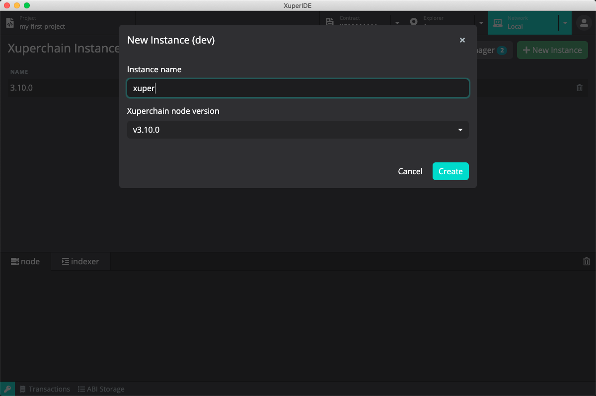节点实例创建完成后，实例列表将显示刚刚创建好的实例，点击实例的绿色 Start 按钮启动 Xuper 节点。启动完成后，你可以在下方的日志查看器中检查节点运行日志。
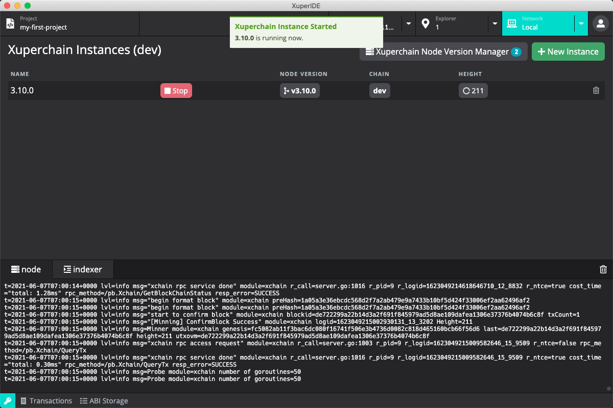连接百度超级链开放网络¶
XuperIDE 除了提供本地节点功能，也提供了连接百度超级链开放网络和连接自定义节点的功能。点击 Network 标签旁的下拉菜单选择 Baidu Xuper 可切换到百度超级链开放网络。
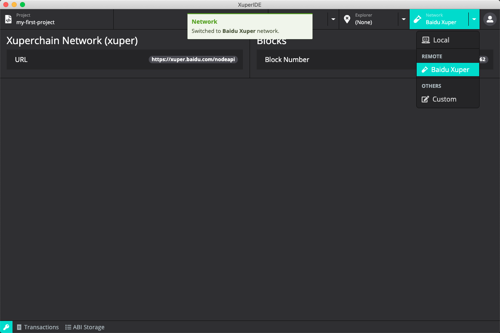具体连接超级链方法请前往 百度超级链开放网络。
区块浏览器¶
节点启动后，点击顶部的 Explorer 标签，主页面将切换为区块浏览器。在区块浏览器中，我们可以查询对应地址的信息。
通过标签旁边的下拉箭头，可以选择并打开密钥管理器中的地址。您也可以在地址栏中输入或粘贴一个地址。打开一个有效地址后，我们便可以看到对应地址的余额信息了，在余额信息的右方显示该地址对应的合约账户地址。
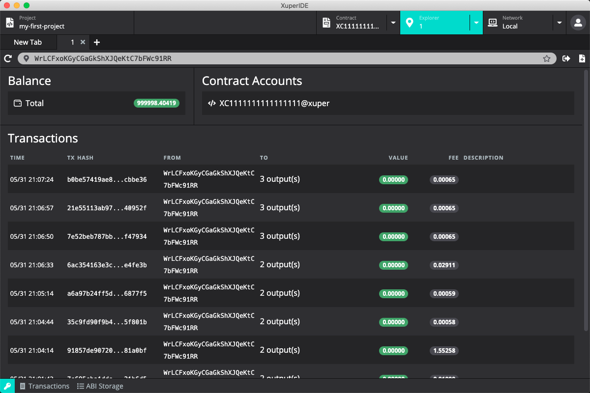创建智能合约账户¶
XuperChain 的一个账户可以拥有多个智能合约账户，用户可以将智能合约部署在合约账户下。
点击地址栏最右侧的创建合约账号按钮，在弹出的创建合约账号窗口中填入创建的合约地址。合约账户地址格式为 16 位的纯数字，且第一位不能为 0。
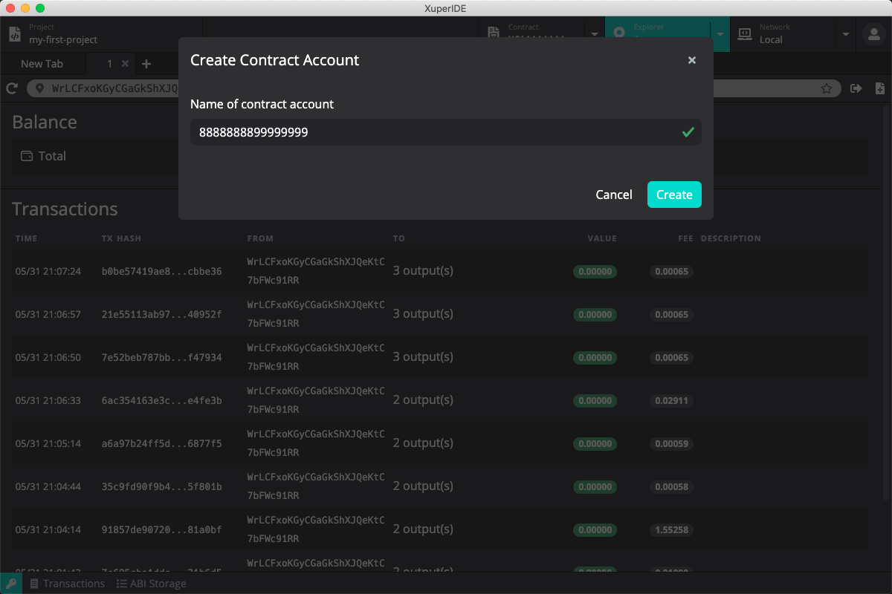点击创建后可以在浏览器中看到刚刚创建的合约账户地址信息，格式为 XC2000000000000000@xuper，点击可以跳转到该地址的合约交互页面。
创建智能合约项目¶
点击顶部的 Project 标签，主页面将切换至项目管理器。点击页面右上角的 New 按钮打开创建项目弹窗，输入项目名称并选择合适的模版，XuperIDE 目前提供了两个模版，分别为
C++ 版本的 Counter
Solidity 版本的 Counter
填写项目名称并选择合适的模版后点击创建项目，创建完成后 XuperIDE 将在项目管理页面中打开该项目。
Counter 合约实现了一个简单的区块链计数器，其中定义了两个方法 increase 和 get，分别为自增计数器和获取当前计数器的值。
编译智能合约项目¶
XuperChain 支持使用 C++ 及 Solidity 开发智能合约，其中 C++ 使用 Xdev 进行合约编译，Solidity 使用 Solc 进行编译。在右下角可以看到目前使用的编译器和编译器版本。可以点击该按钮选择希望使用的编译器版本，或者打开管理器下载更多可用的编译器版本。
点击工具栏的编译按钮（锤子形状），XuperIDE 将进行项目的编译，你可以通过下方的日志查看器来查看编译结果。编译后将在项目目录下中生成 wasm 或者 abi 文件。
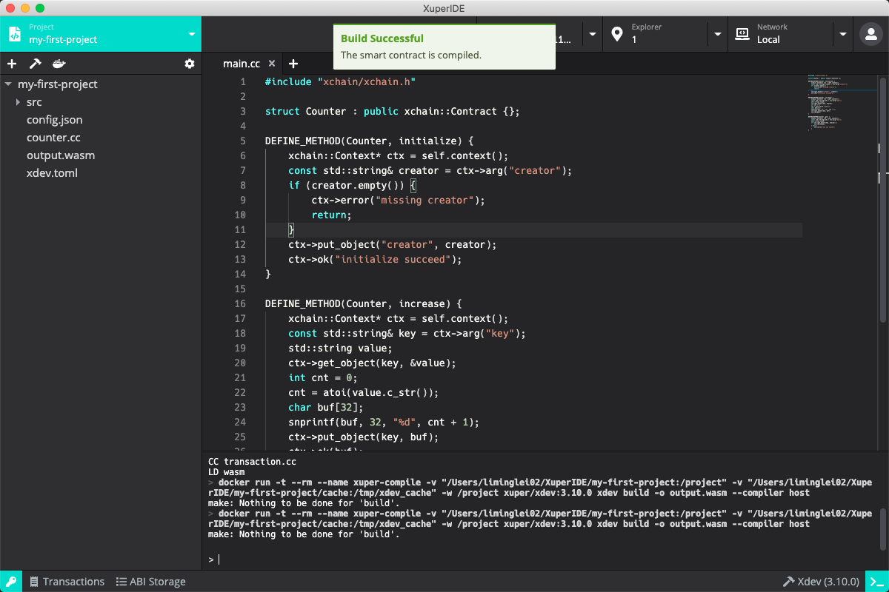部署智能合约项目¶
点击工具栏的部署按钮（船形状），部署参数窗口将被打开，在这里可以输入部署合约的名称、构造函数的参数、交易签名者和合约账号。
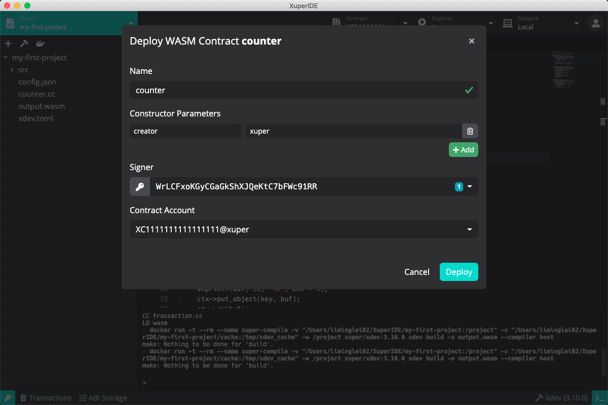调用合约¶
成功部署智能合约后，点击区块浏览器，并在合约地址处选择刚刚部署的地址，主页面将切换至合约浏览器，XuperIDE 将自动打开刚才部署完成的智能合约。
合约浏览器页面主要分为两个部分：
左边为合约的调用方法，可以根据合约代码填写调用的方法及参数，还可以选择不同的签名地址。
右边为合约的数据读取，与调用合约类似，可以根据合约代码填写查询的方法及参数，可以选择不同的签名地址。
XuperIDE 会自动读取合约 ABI 中的 functions，并为每个 function 生成参数表单。用户可以简单的选择要调用的 function，输入参数，选择签名者（需要为 keypair manager 中存在的地址；读操作不需选择），并点击运行按钮进行合约调用。调用结果（成功或失败）将显示在下方的 result 栏中。
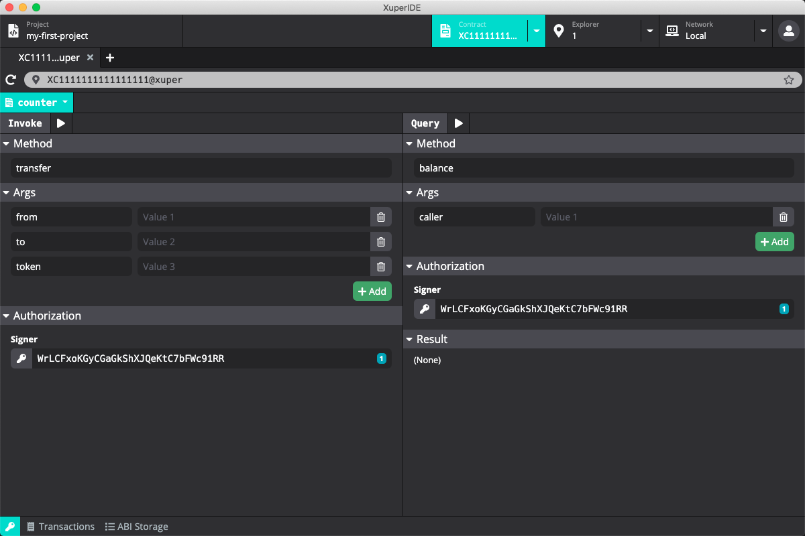接下来我们开始调用部署好的合约。在 Invoke 侧的 Method 中填入 increase，由于 increase 方法需要一个参数 key，将在 Args 下的输入框中留下一个参数，并在左边填入 key 右边填入 a，在 Authorization 的 Signer 中选择地址，点击上方的执行按钮。完成交易后，我们可以看到成功执行的结果。合约会根据传入的 key 参数来增加 counter 的值。
在右边的 Query 的 Method 中填入 get，将在 Args 下的输入框中留下一个参数，并在左边填入 key 右边填入 a，点击执行按钮，在下方 Result 中可以看到查询的结果，即计数器当前的值。
多次调用 increase 并通过 get 查询可以看到计数器根据调用 increase 的次数发生变化。
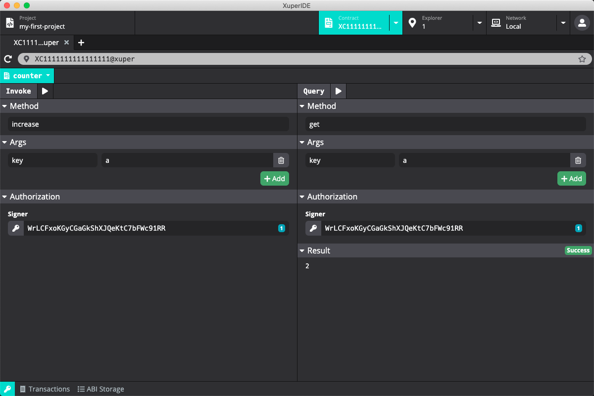